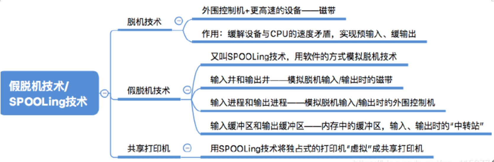

计算机科学基础细节知识总结——计算机组成原理
作者： 禾旺
目录：- 第一章：概述
- 第二章：数据表示与运算
- 第三章：存储系统
- 第四章：指令系统
- 第五章：CPU系统
- 第六章：总线和I/O系统（磁盘）
第一章：概述
- 冯诺依曼机：采用存储程序原理，基本工作方式是控制流驱动方式
- 硬件和软件在逻辑上是等效的，硬件有更高的执行速度，软件实现有更好的灵活性
- 寄存器的存在一般都是为了解决速度差异
- 数据库系统（比较大的概念）是指在计算机系统中引入数据库之后的系统，包括数据库、数据库管理系统、应用系统、数据库管理员组成，其中数据库管理系统是系统程序
- 如今的计算机CPU主频、内存容量等都增幅有限，超级计算机主要采用多处理器提高并行处理能力来增强计算机性能
- 给出了CPU频率和MIPS两个值就可以直接计算CPI，其他的信息要辨别是否多余
- “颜色深度为24位”意思是每个颜色需要24个bit，依此，可类比其他关于“需要多少位”的说法
- 注意说法：局部性原理意味着对主存的访问是不均匀的（集中于某一部分）
- “CPU速度提升50%”并不是CPU运算时间减少一半
- 带宽单位为bps或Bps（可以把两个单位的数值都写出来作为答案）
- 计算机系统层次（自下向上）：微程序机器层、传统机器层（实际的机器层）、操作系统层（软硬件的交界面）、汇编语言层、高级语言层
- 汇编语言是计算机硬件语言，在应用中很少见
- 计算机体系结构：机器语言或汇编语言程序员看到的东西，包括指令集、数据类型、存储器寻址技术等抽象属性 计算机组成：硬件工程师看到的东西，包括对程序员来说透明的硬件细节，例如，一台计算机是否具有乘法指令是结构问题，而实现乘法指令采用什么方式则是一个组成问题
- 一定要注意什么是“透明”：透明=看不到、管不了、不属于自己的范围
不透明=看得到、能使用、属于自己的范围
第二章：数据表示与运算
- 任何时候都要注意题中的数字有没有H，没有的话就是十进制！！
- 补码1000表示-8
- 从x的补码求-x的补码的方法：全部取反末位加一（等价于从后往前第一个“1”的左边全部取反，其余不变）
- unsigned 类型的减法操作和int 减法操作是一样的，都是“减数全部取反、末尾加一”再“补码相加”；
- 八位补码表示的范围是-128~127
- 深刻理解ALU和MUX的配合工作
- 加法器中运算延迟主要来自于进位传递延迟
- 进位生成：g=x*y（只有x和y都是1，它们相加才会进位）
- 加法器可以提高运算速度的是并行进位加法器，但这会带来硬件的成本
- 在ALU加减法中，无符号数和有符号数的四标志生成方式是一样的（溢出到底看哪个要根据指令内容和微操作来判断）：
OF（溢出标志位）=最高位进位 ^ 次高位进位（即符号位进位和数值最高位进位不同时为1）
CF（进位/借位标志位）=最高位进位 ^ sub（因为CF关系到加法和减法的不同，所以要考虑sub位）
SF（符号标志位）=结果的最高位 ##！！
ZF（零标志位）：结果为零则1，非零则0 - 双符号位溢出判断：
00结果为正，无溢出；11结果为负，无溢出
01正溢出；10负溢出 - 乘法电路中（其阵列乘法器可以实现在一个周期内完成乘法指令）：
无符号数：用2n位保存结果是，不会发生溢出；截取最后n位作为最终结果时，如果结果超过n位可以表示的最大结果，则溢出；机器判断方法是看最高n位是否全为0或全为1；
有符号数：用2n位保存中间结果，仅当前n+1位全为1或全为0时不溢出（参考符号扩展） - 数值位n位时，补码一位乘法中最多需要n次移位、n+1次加法（产生n+1位结果）；原码乘法中移位和加法都最多n次
- 原码一位乘法中，符号位不参与运算，单独处理方式：异或；两个n位数进行原码一位乘，则部分积至少需要n+1位
- 补码不恢复余数除法：异号相除时，够减商0，不够减商1
- 要分清题中所给的一条指令的CPI和一个处理需要多少时钟周期，不能把数字弄混
- double占8B
- double + float 可能会导致float对阶时尾数溢出导致丢失精度
- float左规时尾数增大，阶码减小，可能导致阶码下溢；而尾数舍入的情况只会发生在右规格化或者对阶的时候
- 注意浮点数舍入的几种方式：截断法是最简单的
- 浮点数是为了表示小数，所以出现“尾数用补码表示”时，指的是小数的补码，而无论多少位小数补码最小值永远是-1
- 浮点数乘法是考纲之外的东西，但是要注意原码介于1.0~2之间，结果介于1.0~4之间，故乘法可能需要右规而不需要左规。
- 补码表示的尾数最高位与尾数的符号位相异时表示该数是规格化的（注意理解补码的表示方法和尾数规格化的含义（小于1的小数，原码第一位是1））（IEEE754的规格化包括1.0）
- 小数补码的运算方法坚持使用1.001这种格式（第一位表示符号，该数的绝对值小于等于1）
- IEEE754阶码范围：1~254即-126~127，尾数使用原码，有一个个位的1是省略的
- 注意IEEE754的阶码大小，例如真值是0.0111则阶码为-2，保持对数字的敏感！！
- float：1+8+23；double：1+11+52；long double: 1+15+64
- 浮点数格式相同时，基数越大则范围越大、精度越低
- 举例：用小数原码二进制表示的真值，基数改为4后符合规格化的条件是：小数点后两位不全为0。因为这样保证该小数大于0.25，而以4为基数的规格化小数最小是0.25
- 1表述负，0表示正，各种十六进制码要准确，不能疏忽
- 进制转换要严格遵循基数次幂*位值的原则
- 在进行十六进制加法的时候要关注符号拓展，尤其在变址寻址的加法中
- 算术右移：进位标志位移至符号位，顺序右移一位，最低位移至进位标志位
- 补码除法中，余数的符号与除数的符号相同时，上商1，反之商0
第三章：存储系统
- 链接方式：静态链接、装入时动态链接、运行时动态链接，连接阶段形成逻辑地址
装入方式：绝对装入（编译时装入）、静态重定位（定位=装入）、动态重定位（在执行阶段而非装入阶段进行（或者说没有明确的装入阶段））（重定位即把逻辑地址变为内存中的物理地址） - 带有“分区”两个字的是分配策略，和上述装入方式完全不同，包括单一连续分配、固定分区分配（每个分区只装一道作业）、动态分区分配（包含首次适应、邻近适应、最佳适应、最坏适应等分配策略）
- 固定分区式存储管理会产生内部碎片，段式管理换产生外部碎片
- 段页式存储管理的交换单位是页（先分段、再分页）
- 分页管理是在硬件和此操作系统层面完成的，对上层（编译器、链接程序、用户）是不可见的
- 访问缺页时，进行缺页处理（访问磁盘把对应的页写入内存）之后把页表项加入TLB，再访问一次TLB，根据地址再一次访存（用来取指）；即在TLB之后也需要再次访存（每次都至少要访存一次）；引起缺页中断的指令需要执行两次：一次触发调页，一次访问存储盘（真正执行）
- TLB和Cache的缺失都不会导致程序出错，缺页会（缺页中断）。
- 页地址计算判别时可能发生：
缺页中断：得出的页号合法（在页长之内），却不在页表内（有效位为0）；
越界中断：地址计算非法（超过页长）
访问权限错误：执行的操作于页表中的保护位（如读写位、用户/系统属性位等）不一致，比如想要写不允许写的页面。 - 页表项的物理地址=页表始址地址+页号*页表项字节数（按字节编址！！）
- 多级页表找到了中间页表的物理地址之后，要根据地址组成中其后的字段进行补充，得到具体内容的地址，一般都是四的倍数。
- 外层页表不能表示页面物理位置，只是给出了页表的物理地址（用于放进页表基址寄存器里）
- 区分普通的分页和请求分页
- 纯粹的分页存储系统无法解决内存共享和保护的问题，这需要借助于编译器实现
- 页类型为零页时表示该页在分配物理块时需要清零块空间，为写回Swap文件页时表示在写回时必须分配swap空间，并写回到swap空间中，未设置页类型时则按照正常方式处理；因此程序处理的数据所在的页类型决定了数据的读取方式，为零页时不读取，直接清零现分配的快空间即可，后两者则需要从文件系统读取。
- 调页缺页的处理顺序：缺页中断（最先产生中断）->决定淘汰页->页面调出->页面调入
- 如果某进程包含n个不同的页号，则至少会产生n次缺页。
- 适合使用虚拟页式存储的情况：所用虚拟地址符合局部性原理。如堆栈，只有在栈顶跨页时才需要缺页处理；“矢量操作”类似于线性代数中的向量，是存储在数字中的一组数据，符合局部性原理；“间接寻址”存放间接地址的页面、存放直接地址的页面以及存放内容的页面三者之间没有规律，可能会导致三次缺页，故不符合局部性原理
- 考察页表查询时，一般会考察关于访问越界的问题，要对“是否从0开始”、“是否有效”等出题点足够警惕
- 内存越界：某进程访问了不属于自己的空间（如int* p=new int[50]; free(p); free(p); 中，第二个free访问了已经不属于自己的空间）
内存泄漏：已经申请的空间地址丢失（如int * p =new int[50]; p=new int[20]; 中，第一次分配的50个int发生了内存泄漏） - PDBR是页表基址寄存器，进程切换时，PDBR的内容会改变，而同一进程的线程切换时不改变，因为进程与PDBR是一一对应的，线程共享进程的地址空间。
- 产生内存抖动的原因是页面置换算法不合理，毕竟页面置换算法的目的就是防止抖动
- 交换区是在磁盘中开辟的一片区域，与内存交换数据，实现虚拟内存。
- 高速缓冲存储器（Cache）是CPU内复制了经常访问的内存数据，高速磁盘缓存是内存中复制了经常访问的磁盘数据
- ROM写入较慢，读取很快，不适合做高速缓存
- ROM的升级版：EPROM、EEPROM、Flash
- CD-ROM是顺序存储，属于ODM（光盘存储），不属于ROM，ROM（非易失）和RAM（易失）一样可以随机存储，硬盘使用直接存取方式（先找到一小块，再找到地址）介于顺序存取、随机存取之间。
- 四体低位交叉存储器的带宽是单存储器的四倍，存储周期是其四分之一，例如每个存储器的存储周期是40ns 则四体交叉存储器存储周期为10ns。
- 高位交叉存储器的字是连续存放的，不满足局部性原理，但仍有可能一次连续读出相差一个存储器距离的四个字，只是概率很小
- 256MB的存储器由若干4M*8位的DRAM组成，则地址线仅根据4M*8位计算，为22/2=11根（DRAM默认使用地址服复用，要除以2，而未提及DRAM时不除以2），数据线为8根.（这是因为片选功能是由译码器实现的，片选线不算做地址线）
- 在地址线和数据线之外，还需要1根片选线+1或2根读写控制线+供电引线+接地引线
- SRAM：非破坏性读出，不需要刷新。断电即丢失，易失性。存储速度快，但集成度低，功耗较大，常用于Cache
DRAM：破坏性读出，需要刷新。断电即丢失，易失性。存储速度慢，但集成度高，功耗较低，价格低，常用于主存 - DRAM刷新：硬件自动刷新，只要有电就行，不需要CPU，一次刷新占用一次存储周期（集中刷新存在死区，分散刷新无死区但加长了存取周期，异步刷新存在死区但整体比较ok）
- Cache包括：标记位、脏位（一致性维护位）、替换信息位、有效位、内存数据副本（也称数据区，题中可能会要求“数据区”大小）、Cache行号（隐含的）；计算总容量时都需要考虑！
- 注意Cache数据区，如果一行256b=32B，即主存地址的低5位（注意理解依字节编址）是块内偏移，而不是第8位
- 如果在Cache总容量不变的情况下，把Cache块的大小增加一倍，则子块内地址位增加1b，Cache行数减少一倍，导致tag位增加一位（存疑，块内地址位增加1，行数位减少1，则tag位不变）
- Cache内的数据全都是内存的副本，不会增加内存的容量
- 计算Cache或TLB命中率时要分清命令执行的周期一共有多少次访问Cache，比如a[i]=a[i]+1;语句就需要两次Cache访问，访问指令Cache的命中率计算时分母是总指令数（=循环次数*每次循环的指令数）
- Cache组相联映射“路数”是指“每个组内有多少行”
- Cache组相联映射方式有两种方法，一种是高位编组，一种是低位编组，一般使用低位编组
- 相联存储器即可按地址寻址，又可按内容寻址
- 指令Cache的使用方法和数据Cache一样，是把指令当作数据存取，他们分开可以减少指令流水线的冲突
- 关于Cache的CPU执行时间=Cache命中的指令执行时间+Cache缺失时带来的额外开销
- 直写策略需要同时写快设备和慢设备，磁盘比主存慢得多，故Cache-主存可使用直写，而主存-磁盘层次总使用写回策略；
- Cache与主存之间的地址映射是有硬件自动完成的；主存与外存之间的地址映射是由硬件和操作系统共同完成的（或者说前者是由硬件完成的，后者是由操作系统完成的）
- 题目默认Cache的访问与TLB访问有两种方式：同时访问与未命中再访问低速设备
- 题中给出一些目标序号的时候，确认两个重要信息：序号单位和序号起始
- 尤其要关注从零开始的第一次算不算。
第四章：指令系统
- RISC（如ARM、MIPS）：硬布线控制，CISC：微程序控制，其微程序控制存储器（CM，与CU区分！）可能占据CPU芯片的50%以上；
- 寻址时，分清问题问的是地址还是操作数
- 转移指令实现程序控制，但仍然是从PC中读取
- 为了保持数组的随机访问，数组的虚拟地址是连续的，这和变址寻址有关
- 一地址指令格式中，可能有多个操作数，比如另一个操作数由ACC给出，或使用堆栈指针
- 各种寻址（一定要分清）：
隐地址可以简化地址结构
堆栈寻址：指令中没有地址字段，操作数地址隐含在堆栈指针中（注意寻址时要画好图：低、高地址、数据方向等）
相对寻址：便于在程序内部浮动，与当前PC值有关
基址寻址：便于编制浮动程序（整段浮动），可以扩大寻址范围
变址寻址：便于编制循环程序（访问数组等），面向用户，用户直接操控的是变址寄存器的内容，将它与形式地址相加得到变址结果
寄存器寻址：寄存器里直接存放数据，不用访存，可以有效地减少地址字段位数 - 跳转指令（jxxx、bne）的PC计算公式需要结合编址方式、OFFSET含义以及是否先将PC+“1”有关；跳转指令会引起控制相关阻塞，解决办法一般是在IF段后面增加三个时钟周期
- 题中出现“PC总是默认+1”的说法是错误的，应该说PC加上指令长度
第五章：CPU系统
- 硬件工作流程“取数据”要加括号
- 要分清指令在存放数据之前还是之后改变地址值
- 汇编程序员可见的寄存器有 基址寄存器、标志寄存器、PC、通用寄存器组，别的一般不可见（如MAR、MDR、IR），而硬件设计者一般都可见以上的东西。
- 常见控制部件：三态门（三角形，控制开关）、MUX（多路选择器，梯形，用来控制哪一条路接通）、译码器（矩形，用来把一个信号翻译为多个bit）、加法器（平角内裤，实现加法）、ALU（平角内裤，实现多种基于加法的运算）
- ALU宽度即ALU运算对象的宽度，一般和字长（等于机器字长）相等，通用寄存器位数也和机器字长相同
- MAR和地址线数量相同（为了满足存储扩展的需要，即MAR的位数是存储空间的上限，而不一定等于存储空间），MDR和数据线数量相同，所谓“n位CPU”指的是数据总线位数，而“数据字长”指的是例如int占4B，double占8B，这与数据线数无关
- MUX和ALU可以实现PC+“1”的操作，需要进行多路选择。
- 运算器包括：算术逻辑单元（ALU）、暂存寄存器、累加器（ACC）、通用寄存器组（REG）、程序状态字寄存器（PSW）、移位器等
控制器包括：指令部件、时序部件、微操作信号发生器（CU）、中断控制逻辑等
其中指令部件包括：程序计数器（PC）、指令寄存器（IR）和指令译码器（ID） - 数据通路指数据在功能部件之间传送的路径，包括数据通路上流经的部件，如PC、ALU、通用寄存器、PSWR、异常和中断处理逻辑、Cache、MMU（内存管理单元，包括分页管理机制的硬件）等，不包括控制部件。
- 一个指令周期可能包含不同的机器周期数（每个机器周期都是一个存取周期，每个存取周期（机器周期）可能都会被DMA窃取（DMA的数据太重要了，使得它的中断响应比别的中断更及时），在一个指令周期中，每个机器周期都有可能被DMA中断打断，而不需要整个指令周期结束），如果在末尾检测到其他中断请求，其后就会出现“中断相应周期”
- 硬布线控制单元中，CU的输入信号主要来源是译码器产生的 指令信息 和时序系统产生的 机器周期信号和节拍信号
- “XXXop”是读写控制信号，可以理解为水龙头的开关，由CU发出，其作用是：决定总线上数据流方向、控制存储器的读写类型和方向
- 描述指令执行所需的周期：如“sub R1，R3，（R2）”为“ 1 取出R1的数据放进暂存寄存器，2 取出R2的数据与R1相减写进寄存器，3 读取R2的地址数据， 4 根据该地址数据把运算结果写回主存“，共四个时钟周期，这种题需要把文字描述写清楚
- 一定要注意考察的时钟周期从哪到哪儿，依照时间点来斟酌！！
- 指令跳转距离最大不会超过寄存器位数所能表示的数字范围；
- 在微程序中“操作控制信号”就是微命令，微操作是微命令的执行过程，他们是一一对应的，而微指令是若干微命令的集合（一条微指令会发出多个微命令），微程序是微指令的有序集合。形成微程序的入口地址的是机器指令的操作码字段，毕竟微程序是机器指令的划分，其开头由机器指令给出
- 微指令字段编码方式中，互斥性微命令可以放在同一个字段中，但是该字段还需要留出一个全零以表示不进行任何操作，因此3位的字段最多可以表示7个互斥微命令
- 指令有若干条微指令组成，如32条指令，每条指令平均由4条微指令组成，再加上两条公共微指令，则总共130条微指令，断定法（下地址字段法）微指令寻址至少需要8位（与之类似的，下地址字段如果占8位，则对多可以表示256个微指令）
- 计算微指令发出微操作的过程中，紧扣“操作是否相容”，相容则可以出在不同字段同时发出，不相容则需要处于同一个字段（互斥发出）
- 微指令寻址方式有两种，一是微指令计数器（CMAR，相当于PC）给出，二是微指令的下地址字段直接给出
- 若指令系统中有n种机器指令（微程序），则控制存储器中有n+1（必须的取址微程序）+1（可能的中断微程序）
- 微程序控制器由控制存储器和微指令寄存器直接控制实现，硬布线控制器由逻辑门电路组合实现。前者较慢的原因是需要从控制存储器中读出微指令，但只需要根据时序依次进行即可，时序系统比较简单
- 组合逻辑电路不包含记忆存储组件，具有一组输入和一组输出，其输出仅与输入有关，与电路作用前的状态、时刻都无关 时序逻辑电路中的输出不仅与输入的信号有关，还和电路原来的状态有关，时序电路必然包含存储记忆单元
- 机器指令的地址字段的作用是存取数据，微指令的地址字段的作用是确定执行顺序
- 注意“时钟的前半周期写寄存器，后半周期读寄存器”的方式下，同一个时钟周期内的写、读不冲突；
- 指令流水线的五段式：IF（取指，控制器自动进行，根据指令长度不同，操作可能不同）、ID（译码和取数，这虽然在同一段，但确实两个阶段）、EX（执行）、M（访问存储器）、WB（写回寄存器）
- 解决数据相关的办法：硬件阻塞（暂停相关指令的执行）、软件插入（nop）、采用旁路电路技术（专门的数据通路，直接把结果送进ALU做下一次运算）
解决控制相关的办法：分支预测，尽早生成转移目标地址（算上一卦、准确率挺高）、加快和提前形成条件码
解决结构冒险（资源冲突）的方法：把数据和指令Cache分开、访存指令之后的指令暂停一个周期 - 采用转发技术时，需要一个周期进行转发，即将数据冲突的中间三个nop改为一个nop
- 超标量流水线：空分复用，使用多个功能部件，在同一个时钟周期内发射多条独立命令
超长指令字技术：将多条可以并行的指令组合成一个具有多个操作码的超长指令字，需要多个处理部件
超流水线技术：时分复用，把时钟周期再分段 - 若每个指令由n个阶段，每个阶段时间为t，则在理想状态下执行m条指令最短的时间为（m+n-1）t.（该结论适用于很多场合）
第六章：总线和I/O系统（磁盘）
- 字符设备：信息交换以字符为单位，不可寻址、效率低，如打印机、鼠标
块设备：以数据块为单位，可寻址，如磁盘
虚拟设备：把一个物理设备映射为多个逻辑设备 - 设备分配时可以不考虑及时性
- 缓冲池是系统共用资源，多个进程共享，为了管理方便，可以将相同类型的缓冲区连成一个队列
- 缓冲主要为了解决CPU比IO快很多而导致数据积压的问题，所以IO速度很快时，缓冲池没有必要设置
- ##IO传输速率要关注单位时间，抓住“毫秒“或”秒“的周期。
- IO逻辑即设备控制器（中最主要的部分），用于实现对设备的控制
- 设备的高效利用最离不开多道程序设计技术
- CRT：一种老式显示器；总线标准有：ISA EISA VESA PCI PCI-EXPRESS（高性能串行总线） AGP USB RS-232C
- 系统处理IO请求的顺序：用户程序、系统调用处理程序、设备驱动程序、中断处理程序
- 设备驱动程序可以处理关于设备寄存器的相关读写和寻址，包括计算数据所在的柱面号（高位最耗时，移动磁头）、磁头号（中位，选择磁头）、扇区号（低位，依靠旋转最先动）（磁盘地址的构成），向设备寄存器写入控制命令等，每个类型的设备需要一个设备驱动程序
- 与设备相关的中断处理过程是由设备驱动程序完成的，或者说“设备驱动程序可以处理相应控制器或通道发出的中断请求”
- 设备驱动程序不能直接控制IO设备工作（它只是个中间人啊）
- 突发传输的单位可以默认为“磁头不需要移动所能读到的最多的数据”即“同一柱面的所有数据”
- 注意DRAM一次访问一个字，即使是突发传输，“每次访问需要16个时钟”时，总共也需要64个时钟。
- 提到突发传输时一定要注意考点是什么：一般都是“传输过程包括传输一个地址和一连串的数据“，要区分地址和数据，这是最常考的点。
- 使用地址、数据线复用技术可以节省地址线，并不能提高传输率
- IO方式：
程序查询：CPU与设备串行，传送与主程序串行
IO中断方式：CPU与设备并行，传送与主程序串行
DMA方式：CPU与设备并行，传送与主程序并行（理解），纯硬件电路方式，别的都需要程序干预
通道控制方式（已经从大纲删除）：专门用于解决IO的硬件机制（也需要程序控制，即存储在内存里的“通道程序”），缓冲池、覆盖技术、SPOOLing技术都是软件技术； - 通道与设备控制器、设备的关系：
通道 控制 设备控制器，设备控制器 控制 设备 - IO地址线和控制线都是单向的从CPU到IO接口的
- 在同一个周期内，如果CPU处理时间>设备处理时间，则可能导致IO数据丢失
- DMA方式中如果DMA请求得不到相应可能会导致IO数据丢失，一般DMA可以和CPU并行执行（一般的IO方式都不会采用串行，除了程序直接控制方式（程序查询方式））
- IO中断处理方式申请CPU处理时间，发生在指令执行结束之后，是在软件的控制下完成的，不会涉及访问内存，故不会传递主存地址数据
- DMA方式申请总线时间，直接控制总线传送整个数据块，是在硬件控制器的控制下完成的。
- 用户程序不能直接与DMA交流，DMA获得具体存储位置的信息来源是设备驱动程序
- DMA方式与CPU使用主存的方式有：
停止CPU访存：直到DMA传送完成一块数据才释放总线
周期挪用：挪用CPU一个或几个访存周期，并且优先级高于CPU，完成一个字后立即释放总线
交替访存：把CPU周期直接分一部分给DMA访存 - 磁盘块的修改（例如更改下地址指针）需要读一次、写一次，共两次访问磁盘。
- 地址位数往往决定了存储单元的个数！！
- 单总线结构的数据通路需要多个时钟周期来完成一条指令，故不适用于单周期处理器。
- 总线仲裁方式：
独立请求方式：有n根总线请求线和n根总线同意线，响应快但很废线
计数器定时方式：n个设备需要logn（向上取整）根设备地址线
链式查询方式：优先级固定
分散仲裁：大家举牌，看谁优先级高 - 系统使用总线：有利于增减外设、减少信息传输线的条数
- 总线宽度等于数据线根数（因为总线是用来传数据的），与地址线、控制线数无关
- 总线需要负责裁决，而各种“总线忙”、“总线请求”等信号由申请总线的设备发出
- IO总线中
控制线：各种时序、控制、相应信号
数据线：数据（寄存器、命令状态等内容）
地址线：与CPU交换数据的地址码，用来指明CPU要访问的主存或IO接口的地址 - 高速设备使用局部总线链接，有利于节省系统总线带宽
- 总线事务与定时：同步方式采用统一的时钟信号，异步方式则没有时钟控制信号，依靠双方的“握手”信号，即按需分配时间，一次通信往往会交换多位而非一位数据
- 异步传输方式适合于速度差较大的两个设备之间：
一般认为速度由慢到快是：打印机 远小于 磁盘 小于 IO接口 略小于 主存 小于 Cache 略小于 CPU=总线(小于号越多表示速度差异越大，越应该使用异步传输) - 设备控制器 = IO接口 = IO控制器
- 打印机分为：点阵式、活字式（按能否打印出汉字来）；击打式、非击打式（按打字原理分）
- IO接口统一编址（要在相对固定的部分编址）时，使用指令系统中的访存指令来完成输入输出操作，独立编址时则需要专门的IO指令
- 磁盘是一种典型的共享设备，一段时间（并非同一时间）内允许多个用户访问，同一时刻只能有一个进程使用，共享设备是不会引起死锁的
- 磁盘驱动器由磁头、磁盘、读写电路等组成，也就是磁盘本身
- 磁头调度算法：SCAN是双向的、CSCAN是单向的，除了FCFS之外，都会产生磁壁黏着
- 低级格式化（也称物理格式化）：为磁盘划分扇区（物理层面的，划出辐射）、每个扇区采用特别的数据结构，包括校验码；
磁盘分区（不属于物理格式化）：将磁盘按柱面分区（中间层面的，让设备区分C/，D/），每个分区可以作为一个单独的磁盘
逻辑格式化：创建文件系统（逻辑层面的），将初始的文件系统数据结构（包括空闲和已分配的空间以及一个初始为空的目录）存储到磁盘上； - 独立冗余磁盘阵列：RAID0是无冗余、无校验的磁盘阵列，RAID1~5均是有冗余（镜像）或校验的阵列，RAID可以类似流水线那样读取不同磁盘来提高读取速度
- 条带化技术：将连续的数据分成很多小部分，分别存储到不同磁盘上去，使多个进程能同时访问数据的多个不同部分而不冲突，而且在需要对这种数据进行顺序访问的时候可以获得最大程度上的I/O 并行能力。（与RAID无关）
- SPOOLING技术由系统控制 设备与 磁盘中的输入输出井 之间的数据传送 
- 闪存中静态磨损均衡算法比动态算法更先进，SSD会在数据写入前，自动分配较新的数据块。
后记
对于细节的知识整理不成系统，但是在处理很多细节的问题时可以提供参考，希望可以给读者以启发和帮助。